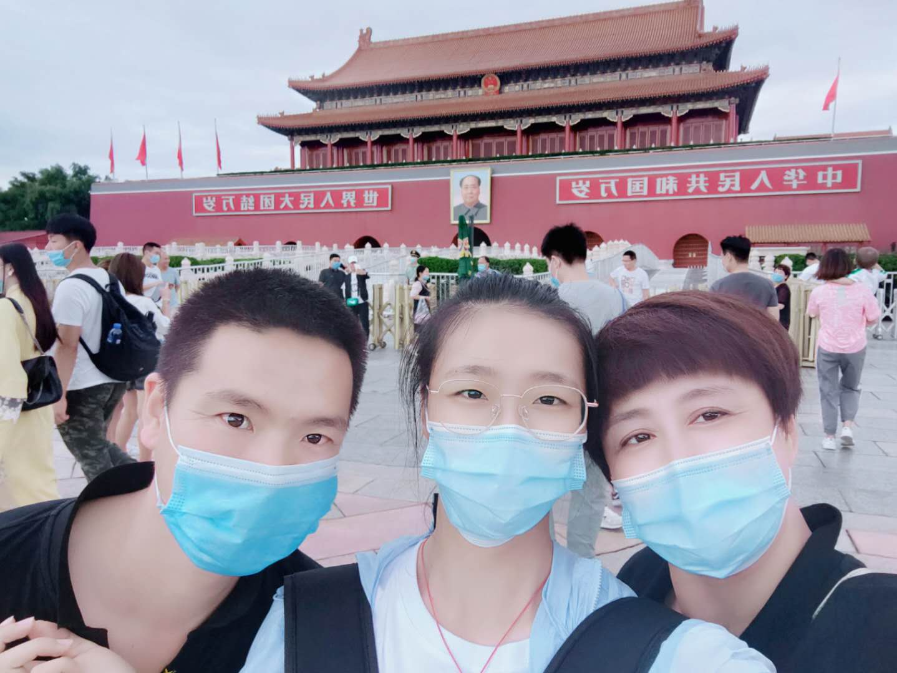

果果的 学习生活 一直追着一道光，去寻找方向 我们仨 都说：“家是心灵最好的港湾，父母永远是最强大的后盾”。我足够幸运。爸爸妈妈将他们所有的爱都无条件地给了我。爸爸妈妈有点甜，所以果果的前十八年吃饱了狗粮，也正是这样，果果健康成长，阳光到现在。爸爸妈妈陪我长大，但他们还没有变老，所以我们仨都正当时。 果果的大学 学医是我从5岁至今都未变的梦想。而想来北大医学却是我高三才确定的梦想。北大医学，于我的意义，可能是想懈怠时的一个警钟；可能是想放弃时的一个动力。它是一束光，是我曾经的信仰。当我来到未名湖前嗅着桂花香；当我来到厚道石旁听着鸟语。我觉得我的18年圆满了，是我的大学给了我一个圆满的句号。  果果的未来打算 在接下来这一年医预，果果要好好打牢基础，竭尽所能学到自己的极致。高数、普化、计概通通都打败，作业、pre通通都做好，学工活动通通都享受。 在接下来这七年大学生活中，果果要把自己变成一个有能力、有学识、有情怀，真正成为一个可以信赖、值得托付的医务工作者。 在接下来的一生中，果果要尽心尽力做一个对他人、社会、国家、世界有价值的人，将自己的积极价值最大化。